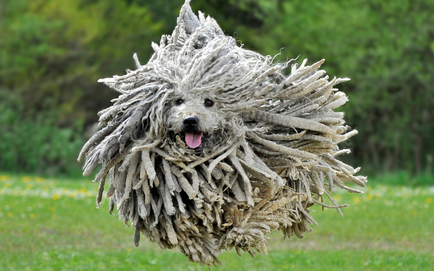
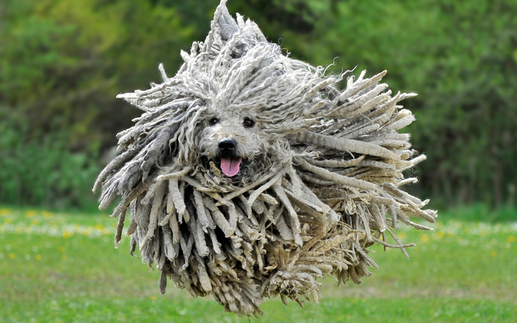
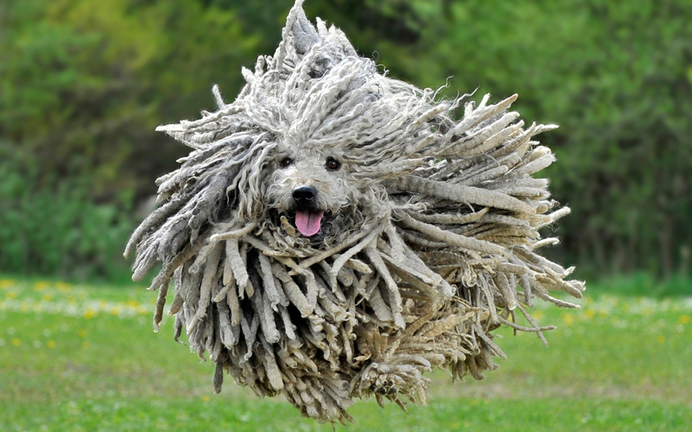

Pull-E
The first assistive shopping trolley
Pull-E is the first robotic shopping trolley capable of balancing and climbing stairs. The user does not need to pull the shopping trolley anymore, just place his hand on the handle.
Features
Pull-E is able to move, climb the stairs, and resist to perturbations. Hence it is able to balance and resist perturbations it can assist the elderly during walking. Therefore, Pull-E can facilitate elderly’s longer independence.

The name Pull-E
The name Pull-E ("Puli") comes from the name of a Hungarian dog called Puli. The Puli is a guarding dog valued for its energy and determination, which is a result of its sheepdog history.

The development of Pull-E
The development of Pull-E from the idea generation till the current stage .
Concept development
In the beginning of this project several elderly ladies have been interviewed. The goal was to get familiar with the difficulties they are facing on daily basis. That's how the concept of the stair climbing trolley was born.
Prototype without sensors
The next step was to test the basic concept on a prototype. A Lego prototype has been built with motors. This device was able to climb the stairs although it was not able to balance and resist perturbations.
Prototype equipped with sensors
It was time for using sensors. An IMU board (includes an accelerometer and a gyroscope) has been used to measure the tilt angle. In addition force sensors are placed in the handle. By using the force sensors the Pull-E can be guided just like a bike handle.
Design of a control system
The most widespread control method for balancing is the PID control. Unfortunately the PID control is not robust enough to resist perturbations and assist the elderly. Therefore a new control method has been implemented and tested in simulation.
Real size prototype
The next step was to build a real size prototype. The current prototype is able to move, although its motors are not strong enough to climb the stairs. In order to launch this product on the market a new prototype needs to be build with stronger motors.
Looking for companies!
If you like the Pull-E project please contact us!